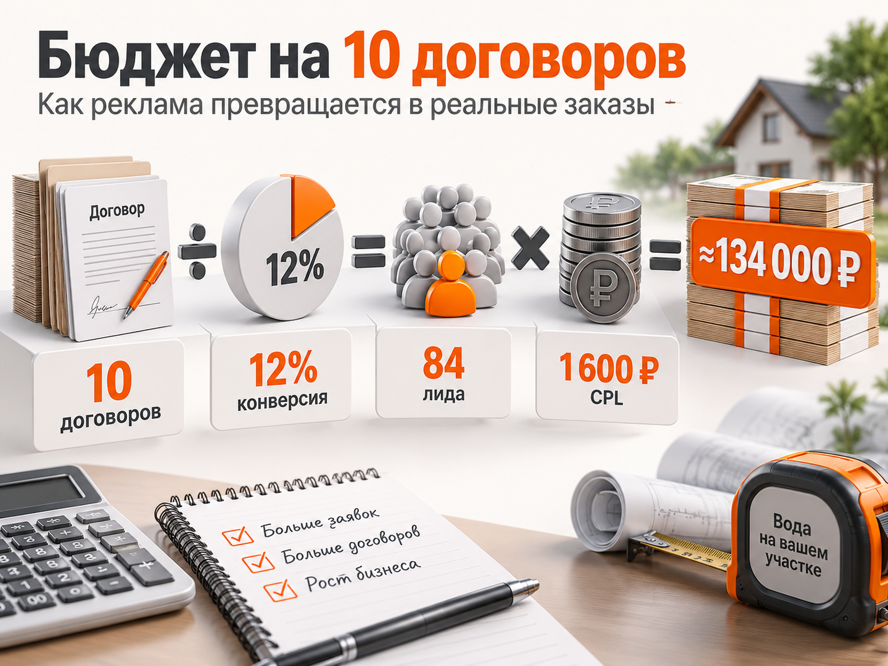

Блог о платном трафике
Как продвигать бурение скважин: реклама и прогноз бюджета
Бурение скважин - локальная услуга с выраженной сезонностью, высоким чеком и уже сформированным поисковым спросом. Поэтому я бы строил продвижение прежде всего вокруг Яндекс Директа на горячем спросе, отдельной посадочной страницы под бурение и нормальной аналитики от заявки до договора. Вторым платным каналом стоит тестировать Авито.
По свежим кейсам 2026 года стоимость обращения из Директа может существенно различаться даже внутри одной ниши. В одном проекте по Московской области получили 203 заявки по 1 500 ₽, в другом проекте из Ярославля заявка из уже работающего Директа стоила примерно 800-1 000 ₽. Поэтому искать одну «среднюю цену лида по бурению скважин» неправильно.
Для первоначального расчёта без конкретного региона я бы закладывал примерно 1 200-2 000 ₽ за первичное обращение из Яндекс Директа. Это не средняя цена по рынку, а осторожный рабочий диапазон для медиаплана. После первых нескольких недель его нужно заменить фактическим CPL конкретного проекта.
Что показывают свежие кейсы по бурению скважин
Свежих данных по нише достаточно, чтобы увидеть несколько важных закономерностей.
В кейсе по Московской области за два месяца было потрачено 304 478 ₽ и получено 203 обращения. CPL составил около 1 500 ₽, а конверсия сайта из клика в заявку - 6,8%. В рекламе разделяли районы Подмосковья и типы услуг, использовали отдельный лендинг, квиз, коллтрекинг и Метрику.
В опубликованном 7 августа 2026 года кейсе компании из Ярославля и области существующий Яндекс Директ приносил заявки примерно по 800-1 000 ₽. После подключения Авито за четыре месяца несезона получили 292 заявки по 377 ₽. Это хороший пример того, почему в этой нише не стоит ограничиваться одним источником.
Есть и более дешёвые результаты, но переносить их на другой бизнес нельзя. Например, в опубликованном кейсе Директа за май-июнь указан CPA 480 ₽ и конверсия из клика 8,6%. Такой результат полезен как подтверждение потенциальной эффективности канала, но не как прогноз для любого региона.
Главный вывод из этих цифр простой: разброс слишком велик, чтобы планировать рекламу по одной найденной стоимости лида. География, сезон, сайт, известность компании, конкуренция и само определение «заявки» могут изменить результат в несколько раз.
Почему география особенно важна
Буровая компания физически ограничена зоной, куда имеет смысл отправлять технику и бригаду.
Поэтому рекламировать условно всю область одним большим геотаргетингом не всегда правильно. Я бы отдельно анализировал районы и населённые пункты:
- где компания реально работает;
- сколько стоит выезд техники;
- насколько хорошо известна геология района;
- сколько конкурентов работает рядом;
- какие районы дают договоры, а не просто обращения.
Особенно интересны поисковые запросы, где человек сразу указывает географию: «бурение скважин Истра цена», «скважина на воду Дмитров», «бурение скважины под ключ Чехов».
В свежем кейсе по Московской области именно географические запросы и объявления с конкретными районами назывались среди наиболее эффективных.
Посадочная должна быть только про скважины
Одна из ключевых ошибок - отправлять человека с рекламы бурения на общую страницу компании, где одновременно предлагаются скважины, септики, отопление, колодцы и другие услуги.
В августе 2026 года Яндекс отдельно разобрал эту нишу и привёл именно такой пример: запрос про бурение скважины должен вести на страницу про бурение, а не на общую страницу инженерной компании.
На посадочной я бы показал:
- где компания бурит;
- какие типы скважин делает;
- ориентир по стоимости или стоимости метра;
- что входит в работу;
- собственную технику и бригаду;
- фотографии реальных объектов;
- глубину выполненных скважин по районам;
- сроки;
- гарантию;
- понятный расчёт стоимости;
- отзывы;
- форму, телефон и мессенджер.
Особенно полезен калькулятор или короткий квиз. Но его задача не просто увеличить число заполненных форм. Он должен помогать квалифицировать обращение: узнать район, примерные сроки и основные параметры объекта.
Как запускать Яндекс Директ
Главный источник я бы начинал с Поиска. Здесь уже есть люди, которые сами ищут исполнителя и сравнивают предложения.
Основные группы спроса:
- «бурение скважин» + география;
- «скважина на воду» + география;
- «бурение скважин цена»;
- «скважина под ключ»;
- артезианские и другие типы скважин, которые компания действительно делает;
- обустройство скважины, если эта услуга продаётся отдельно.
Не нужно автоматически создавать десятки мелких кампаний. Структура должна разделять реально отличающиеся услуги и спрос, но одновременно оставлять алгоритмам достаточно статистики.
Отдельное внимание нужно уделить реальным поисковым запросам. В этой нише легко платить за информационный и смежный спрос: самостоятельное бурение, буровые установки, аренду оборудования, вакансии, обучение, нефтяное бурение, ремонт и чистку скважин, если компания этим не занимается.
Подробнее общую механику рекламы строительных услуг я разбирал в статье «Яндекс Директ для строительной компании».
Поиск и РСЯ нужно оценивать отдельно
РСЯ в бурении скважин может давать дополнительный объём, но я бы не смешивал её статистику с Поиском.
Человек на Поиске уже ищет подрядчика. Пользователь РСЯ может только строить дом, интересоваться участком или автономным водоснабжением.
Поэтому сравнивать нужно не только CPL, но и:
- качество обращений;
- долю квалифицированных лидов;
- договоры;
- стоимость договора.
Дешёвые заявки из сетей ничего не дают, если большую часть отдел продаж отклоняет.
Подробнее разницу этих каналов я разбирал в статье «Поиск или РСЯ в Яндекс Директе».
Если конверсий пока мало, я также не стал бы автоматически переводить кампанию на максимально глубокую цель или оплату за конверсии. Сначала нужно накопить достаточное количество стабильных данных.
Авито стоит тестировать отдельно
По свежим кейсам Авито выглядит для бурения скважин особенно интересно.
В Ярославле и области за четыре месяца с ноября по февраль получили 292 заявки по 377 ₽. При этом автор кейса указывает, что существующий Директ давал обращения примерно по 800-1 000 ₽.
Другой кейс опубликован 25 марта 2026 года. Компания из Крыма за первый месяц получила 214 контактов по 100 ₽, из которых 26 превратились в продажи. Конверсия контакта в продажу по этим опубликованным цифрам составляет примерно 12,1%.
Но 100 ₽ за контакт нельзя использовать как ориентир для медиаплана. Это результат конкретного аккаунта, региона и периода.
Из этого кейса полезнее другой вывод: на Авито хорошо сработали не красивые рекламные баннеры, а обычные фотографии реальных буровых работ, оборудования и мастеров. Для такой услуги доказательство того, что компания действительно бурит скважины, зачастую важнее декоративного креатива.
Я бы рассматривал Авито как самостоятельный канал, а не как замену Директу.
Сезонность нужно учитывать до запуска рекламы
У бурения выраженный сезон.
В свежем кейсе Авито основной период повышенного спроса описан примерно с конца апреля до конца октября, а начинать активное продвижение рекомендуют ещё в конце февраля или начале марта.
При этом другой проект получил недорогие заявки с Авито даже в ноябре-феврале. Значит, межсезонье не обязательно означает полное отключение рекламы. Скорее нужно отдельно считать объём спроса и стоимость привлечения.
Оптимальная схема выглядит так:
- зимой подготовить сайт, аналитику и рекламные кампании;
- в конце зимы или начале весны начать собирать статистику;
- в сезон масштабировать работающие связки;
- осенью постепенно снижать бюджет по фактическому спросу.
Точные месяцы будут зависеть от региона и погоды.
Считать нужно не заявку, а всю воронку
Для бурения скважин недостаточно знать CPL.
Нормальная воронка выглядит так:
реклама → обращение → квалифицированный лид → расчёт или замер → договор
Квалифицированным я бы считал обращение, где как минимум подтверждены реальная потребность, подходящая география и приемлемые сроки.
После этого можно отдельно считать:
- CPL = расходы / все обращения;
- стоимость квалифицированного лида = расходы / подходящие обращения;
- CAC = расходы / договоры.
Для такой услуги имеет смысл передавать статусы из CRM обратно в Метрику: например, «квалифицированный лид» и «договор». Подробнее эта схема разобрана в статье «Офлайн-конверсии в Яндекс Директ и Метрике».
Но оптимизировать кампанию по договору имеет смысл только тогда, когда таких событий достаточно. При маленьком объёме данных более реалистичной целью может быть квалифицированный лид.

Какой CPL заложить в прогноз
В свежих материалах встречаются результаты Директа примерно от 480 до 1 500 ₽ за обращение. При этом часть кейсов относится к разным регионам и использует разные определения конверсии.
Поэтому я бы не писал, что «средний CPL бурения скважин составляет 1 000 ₽».
Без данных конкретного региона для первоначального прогноза разумнее заложить:
1 200-2 000 ₽ за первичный лид из Яндекс Директа.
Это намеренно более осторожный диапазон, чем лучшие опубликованные результаты.
После запуска его нужно заменить реальными цифрами конкретной компании.
Сколько бюджета нужно на 10 договоров
Бюджет нельзя определить только по CPL. Нужно знать, какая доля заявок превращается в реальные договоры.
Универсальной конверсии лида в продажу в этой нише нет, поэтому для прогноза возьмём три расчётных сценария. Это не рыночная статистика, а модель чувствительности.
Сильный сценарий
CPL - 1 200 ₽.
Конверсия лида в договор - 15%.
Для 10 договоров нужно:
10 / 0,15 = примерно 67 лидов
67 × 1 200 ₽ = примерно 80 000 ₽ рекламного бюджета
Рабочий сценарий
CPL - 1 600 ₽.
Конверсия лида в договор - 12%.
10 / 0,12 = примерно 84 лида
84 × 1 600 ₽ = примерно 134 000 ₽
Осторожный сценарий
CPL - 2 000 ₽.
Конверсия лида в договор - 8%.
10 / 0,08 = 125 лидов
125 × 2 000 ₽ = 250 000 ₽
Таким образом, одинаковые 10 договоров могут потребовать примерно от 80 000 до 250 000 ₽ рекламного бюджета.
Разница возникает не только из-за рекламы. Огромное влияние оказывает то, сколько полученных обращений компания реально закрывает в договор.
Поэтому прогноз лучше строить от экономики бизнеса, а не от чужого CPL. Подробно эта методика разобрана в статье «Прогноз бюджета Яндекс Директ».
Как определить допустимую стоимость лида
Предположим, бизнес готов платить максимум 12 000 ₽ рекламных расходов за один договор.
Если в договор превращается 12% лидов:
12 000 × 12% = 1 440 ₽
Значит, допустимый CPL составляет около 1 440 ₽.
Если фактическая заявка стоит 1 800 ₽, проблема уже видна.
Но снижать CPL любой ценой тоже нельзя. Более дешёвые обращения могут оказаться менее качественными.
Поэтому одновременно нужно смотреть:
- лиды;
- квалифицированные лиды;
- договоры.
Именно конечная экономика определяет, хороша реклама или нет.
Что делать перед запуском
- Сначала определить реальную зону работы и экономику одного договора.
- Затем подготовить отдельную страницу именно под бурение скважин, подключить Метрику, коллтрекинг и передачу заявок в CRM.
- После этого собрать горячий поисковый спрос, разделить реально отличающиеся услуги и регионы, запустить Поиск и регулярно анализировать реальные поисковые запросы.
- РСЯ и Авито подключать как отдельные источники и оценивать не по общей цене обращения, а минимум по качеству лидов.
- После накопления статистики пересчитать первоначальный медиаплан уже по собственным данным: фактический CPL → доля квалифицированных лидов → договоры → стоимость договора.
Именно после этого можно решать, насколько масштабировать рекламу.
Главные ошибки в рекламе бурения скважин
Самые опасные ошибки здесь связаны не с отдельной настройкой Директа, а со всей системой.
Слишком широкая география приводит заявки туда, куда бригаде невыгодно ехать.
Общая страница про скважины, септики и другие инженерные услуги снижает соответствие запросу.
Оценка рекламы только по заполненным формам скрывает нецелевые обращения.
Попытка сразу обучать автоматическую стратегию на редких договорах оставляет алгоритму слишком мало данных.
А ориентация на чужой CPL создаёт ложные ожидания ещё до запуска.
Итог
Для бурения скважин есть достаточно свежих данных, чтобы строить отдельную рекламную стратегию без объединения с септиками.
Основой я бы сделал Яндекс Директ на горячем поисковом спросе, отдельную посадочную под бурение и аналитику до квалифицированного лида и договора. Авито стоит тестировать параллельно как самостоятельный канал.
Без конкретного региона для первого медиаплана я бы закладывал CPL около 1 200-2 000 ₽. При задаче получать 10 новых договоров в месяц расчётный рекламный бюджет может находиться примерно в диапазоне 80 000-250 000 ₽ в зависимости от стоимости лида и работы всей воронки.
После первых недель рекламы чужие кейсы уже нужно отложить и пересчитывать прогноз по собственным данным компании.